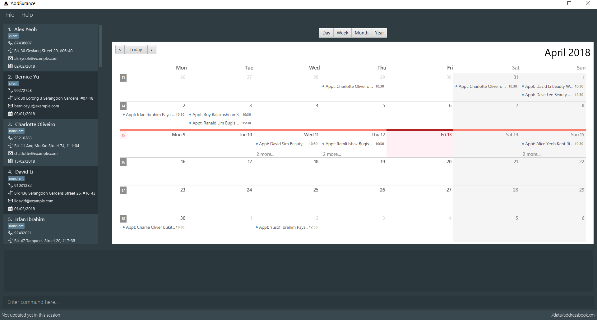

By: Team SE-EDU Since: Jun 2016 Licence: MIT
1. Introduction
AddSurance is an address book application targeted at insurance agents who prefer to use a desktop application for managing contacts with current or potential clients. It allows insurance agents to manage a huge list of contacts in batches, as well as keep track of appointments with clients. More importantly, AddSurance is optimized for insurance agents who prefer to work with a Command Line Interface (CLI) while still having the benefits of a Graphical User Interface (GUI). If you can type fast, AddSurance can get your contact management tasks done faster than traditional GUI apps. Interested? Jump to the Section 2, “Quick Start” to get started. Enjoy!
2. Quick Start
-
Ensure you have Java version
1.8.0_60or later installed in your Computer.Having any Java 8 version is not enough.
This app will not work with earlier versions of Java 8. -
Download the latest
addressbook.jarhere. -
Copy the file to the folder you want to use as the home folder for your Address Book.
-
Double-click the file to start the app. The GUI should appear in a few seconds.
 -
Type the command/command alias in the command box and press Enter to execute it.
e.g. typinghelporhand pressing Enter will open the help window. -
Some example commands you can try:
-
list: lists all contacts -
l: lists all contacts -
addn/John Doe p/98765432 e/johnd@example.com a/John street, block 123, #01-01: adds a contact namedJohn Doeto the Address Book. -
an/John Doe p/98765432 e/johnd@example.com a/John street, block 123, #01-01: adds a contact namedJohn Doeto the Address Book. -
delete3: deletes the 3rd contact shown in the current list -
d3: deletes the 3rd contact shown in the current list -
exit: exits the app -
ex: exits the app
-
-
Refer to Section 4, “Features” for details of each command.
4. Features
Command Format
-
Words in
UPPER_CASEare the parameters to be supplied by the user e.g. inadd n/NAME,NAMEis a parameter which can be used asadd n/John Doe. -
Items in square brackets are optional e.g
n/NAME [t/TAG]can be used asn/John Doe t/clientor asn/John Doe. -
Items with
… after them can be used multiple times including zero times e.g.[t/TAG]…can be used ast/client,t/client t/owes moneyetc. -
Parameters can be in any order e.g. if the command specifies
n/NAME p/PHONE_NUMBER,p/PHONE_NUMBER n/NAMEis also acceptable. -
Actual command words can be replaced by their aliases e.g. for the help command, user can use its alias,
h, instead.
4.1. General Features
4.1.1. Viewing help : help or h
Format: help or h
4.1.2. Undoing previous command : undo or u
Restores the address book to the state before the previous undoable command was executed.
Format: undo or u
|
Undoable commands: those commands that modify the address book’s content ( |
Examples:
-
delete 1
list
undo(reverses thedelete 1command) -
select 1
list
undo
Theundocommand fails as there are no undoable commands executed previously. -
delete 1
clear
undo(reverses theclearcommand)
undo(reverses thedelete 1command)
4.1.3. Redoing the previously undone command : redo or r
Reverses the most recent undo command.
Format: redo or r
Examples:
-
delete 1
undo(reverses thedelete 1command)
redo(reapplies thedelete 1command) -
delete 1
redo
Theredocommand fails as there are noundocommands executed previously. -
delete 1
clear
undo(reverses theclearcommand)
undo(reverses thedelete 1command)
redo(reapplies thedelete 1command)
redo(reapplies theclearcommand)
4.1.4. Listing entered commands : history or hist
Lists all the commands that you have entered in reverse chronological order.
Format: history or hist
|
Pressing the ↑ and ↓ arrows will display the previous and next input respectively in the command box. |
4.1.5. Exiting the program : exit or ex
Exits the program.
Format: exit or ex
4.1.6. Saving the data
Address book data are saved in the hard disk automatically after any command that changes the data.
There is no need to save manually.
4.2. Contacts Features
4.2.1. Adding a person: add or a
Adds a person to the address book
Format: add n/NAME p/PHONE_NUMBER e/EMAIL a/ADDRESS [t/TAG]… or a n/NAME p/PHONE_NUMBER e/EMAIL a/ADDRESS [t/TAG]…
| A person can have any number of tags (including 0) |
Examples:
-
add n/John Doe p/98765432 e/johnd@example.com a/John street, block 123, #01-01 -
add n/Betsy Crowe t/client e/betsycrowe@example.com a/New Hill Village p/1234567 t/owes money
4.2.2. Listing all persons : list or l
Shows a list of all persons in the address book.
Format: list or l
4.2.3. Editing a person : edit or e
Edits an existing person in the address book.
Format: edit INDEX [n/NAME] [p/PHONE] [e/EMAIL] [a/ADDRESS] [t/TAG]… or e INDEX [n/NAME] [p/PHONE] [e/EMAIL] [a/ADDRESS] [t/TAG]…
Examples:
-
edit 1 p/91234567 e/johndoe@example.com
Edits the phone number and email address of the 1st person to be91234567andjohndoe@example.comrespectively. -
edit 2 n/Betsy Crower t/
Edits the name of the 2nd person to beBetsy Crowerand clears all existing tags.
4.2.4. Locating persons by detail: find or f
Finds persons whose details contain any of the given keywords or part thereof.
Format: find KEYWORD [MORE_KEYWORDS] or f KEYWORD [MORE_KEYWORDS]
Examples:
-
find John
ReturnsjohnandJohn Doe -
find Betsy Tim John
Returns any person having names containingBetsy,Tim, orJohn
4.2.5. Deleting a person : delete or d
Deletes the specified person from the address book.
Format: delete INDEX or d INDEX
Examples:
-
list
delete 2
Deletes the 2nd person in the address book. -
find Betsy
delete 1
Deletes the 1st person in the results of thefindcommand
4.2.6. Deleting dated persons : deletebefore or db
Deletes all persons added before a specified date matching all specified tags.
Format: deletebefore d/DATE t/TAG… or db d/DATE t/TAG…
You are encouraged to attach tags to persons representing different groups.
This way, you can delete persons of a particular group who were added before a date.
For example, to delete contacts relating to non-clients in batch, you can attach a "nonclient" tag to these persons and
use the deletebefore command.
|
Examples:
-
deletebefore d/12/12/2017 t/nonclients
Deletes all non-clients added before 12/12/2017 in the address book.
4.2.7. Emailing a person : email or em
Emails a person based on the specified name.
Format: email n/NAME pu/PURPOSE
4.2.8. Creating a new template : addtemplate or at
Creates a new template based on the specified purpose, subject and message.
Format: addtemplate pu/PURPOSE s/SUBJECT m/MESSAGE
| You cannot create two templates with the same purpose |
Examples:
-
addTemplate pu/greeting s/Hello There m/Luke I am your father -
addTemplate pu/holiday s/Merry Christmas m/Santa Claus is coming to town!
4.2.9. Deleting a template : deletetemplate or dt
Deletes a template in the address book.
Format: deletetemplate pu/PURPOSE
Examples:
-
dt greeting
Deletes the template with the purpose greeting.
4.2.10. Sorting contacts in address book : sort or so
Sorts the contacts in the address book in alphabetical order by name. Sorting will not distinguish between first and last names, but will sort by the full text entered for a contacts name.
Currently only sorting alphabetically by name is supported.
No arguments are necessary, can simply enter sort in CLI
|
Format: sort or so
Examples:
-
sort -
so
4.2.11. Importing contacts from CSV : importcontacts or ic
Imports contacts from a csv file that contains the header (Name, Email, Phone, Address)
Format: importcontacts PATH.csv
For example importcontacts ~/PATH/examplefile.csv will import the contacts contained in the .csv file examplefile.csv at PATH.
| The command should meet the following conditions: |
-
Include the file extension
.csvat the end of the file path -
Use the full (not the relative) file path
-
No need to include quotations ("…") around the file path
The .csv file from which you are importing the contacts should:
|
-
Have 4 headers in the following order: Name, Email, Phone, Address. The header is simply the first row of the .csv
-
Be a
.csvfile..txtand other file endings are not supported -
Each entry should follow the standard conditions for Name, Phone, Email, and Address. For example, phone numbers must be more than 3 numbers.
An example of a suitable import file format is shown below.
4.2.12. Exporting contacts to CSV: exportcontacts or ec
Export all contacts to a .csv file.
Format: ec PATH
It is not necessary to include a file path after the command. If no file path is included, ec will create and write to a new .csv file, data/exportToExisting.csv. This is necessary for testing purposes, so we encourage the user to specify a file path.
|
4.2.13. Clearing all contacts : clear or c
Clears all contacts from the address book.
Format: clear or c
4.2.14. Selecting a person : select or s [Coming in v2.0]
Selects the person identified by the index number used in the last person listing.
Format: select INDEX or s INDEX
Examples:
-
list
select 2
Selects the 2nd person in the address book and shows the profile page of the person. -
find Betsy
select 1
Selects the 1st person in the results of thefindcommand and shows the profile page of the person.
4.3. Scheduling Features
| The calendar view is optimized for fullscreen mode. |
| Currently, there is a glitch in the scaling of the calendar Year Page. We are working very hard with the third party provider to resolve this issue. |
4.3.1. Adding an appointment : addappointment or aa
Adds an appointment to the address book that will be shown in the calendar panel.
Format: addappointment n/NAME d/DATE st/STARTTIME et/ENDTIME l/LOCATION or aa n/NAME d/DATE st/STARTTIME et/ENDTIME l/LOCATION
| The appointment added need not be related to any person existing in the address book. This gives you the flexibility to keep track of appointments with anyone, without having to add that person into the address book. |
| You are not allowed to add appointments that clash in time. |
Examples:
-
aa n/Betsy d/12/12/2017 st/12:30 et/13:30 l/Gold Park Estate
Creates an appointment with Betsy on 12/12/2017 from 12:30pm to 1:30pm at Gold Park Estate.
4.3.2. Deleting an appointment : deleteappointment or da
Deletes an appointment in the address book.
Format: deleteappointment n/NAME d/DATE st/STARTTIME et/ENDTIME l/LOCATION or da n/NAME d/DATE st/STARTTIME et/ENDTIME l/LOCATION
| In the current version, the deleteappointment command requires you to input all fields of the appointment to be deleted. This command will be upgraded to the enhanced deleteappointment command which will be available in v2.0. |
Examples:
-
da n/Betsy d/12/12/2017 st/12:30 et/13:30 l/Gold Park Estate
Deletes the appointment previously arranged with Betsy on 12/12/2017 from 12:30pm to 1:30pm at Gold Park Estate.
4.3.3. Zooming in calendar view : zoomin or zi
Zooms in the calendar panel to show a more detailed calendar view
Format: zoomin or zi
Examples:
-
zi
If the calendar panel is previously showing the Month View, it will now be showing the Week View.
4.3.4. Zooming out calendar view : zoomout or zo
Zooms out the calendar panel to show a wider calendar view
Format: zoomout or zo
Examples:
-
zo
If the calendar panel is previously showing the Day View, it will now be showing the Week View.
4.3.5. Going backward on calendar view : gobackward or gb
Makes the calendar view go backward in time from the currently displaying date.
Format: gobackward or gb
Examples:
-
gb
If the calendar panel is currently displaying Day View for 02/02/2018, it will change the Day View to 01/02/2018
4.3.6. Going forward on calendar view : goforward or gf
Makes the calendar view go forward in time from the currently displaying date.
Format: goforward or gf
Examples:
-
gf
If the calendar panel is currently displaying Day View for 02/02/2018, it will change the Day View to 03/02/2018
4.3.7. Finding an appointment : findappointment or fa [Coming in v2.0]
Finds appointments with details containing any of the given keywords or part thereof.
Format: findappointment KEYWORD… or fa KEYWORD…
Examples:
-
findappointment 12/12/2018
Returns any appointment that is scheduled on 12/12/2018 -
findappointment Betsy Tim John
Returns any appointment withBetsy,Tim, orJohn
4.3.8. Editing an appointment : editappointment or ea [Coming in v2.0]
Edits an appointment in the address book.
Format: editappointment INDEX [n/NAME] [d/DATE] [st/STARTTIME] [et/ENDTIME] [l/LOCATION]
or ea INDEX [n/NAME] [d/DATE] [st/STARTTIME] [et/ENDTIME] [l/LOCATION]
Examples:
-
findappointment Betsy
editappointment 1 d/25/12/2017 l/Parkway Parade
Edits the date and location of the first appointment with Betsy in the listing to 25/12/2017 and Parkway Parade respectively.
4.3.9. Deleting an appointment (enhanced) : deleteappointment or da [Coming in v2.0]
Deletes the specified appointment in the address book.
Format: deleteappointment INDEX or da INDEX
Examples:
-
findappointment 12/12/2018
deleteappointment 1
Deletes the 1st appointment in the results of thefindappointmentcommand
4.3.10. Configuring calendar theme : configcalendar or cc [Coming in v2.0]
Configures the calendar view.
Format: configcalendar s/STYLE or cc s/STYLE
Examples:
-
cc s/STYLE_2
Set the calendar theme to the predefinedSTYLE_2.
5. FAQ
Q: How do I transfer my data to another Computer?
A: Install the app in the other computer and overwrite the empty data file it creates with the file that contains the data of your previous Address Book folder.
6. Command Summary
-
Add :
add n/NAME p/PHONE_NUMBER e/EMAIL a/ADDRESS [t/TAG]…
e.g.add n/James Ho p/22224444 e/jamesho@example.com a/123, Clementi Rd, 1234665 t/friend t/colleague -
Add Appointment :
addappointment n/NAME d/DATE st/STARTTIME et/ENDTIME l/LOCATION
e.g.addappointment n/Betsy d/12/12/2017 st/12:30 et/13:30 l/Gold Park Estate -
Add Template :
addtemplate pu/PURPOSE s/SUBJECT m/MESSAGE
e.g.addtemplate pu/holiday s/Merry Christmas m/Santa Claus is coming to town! -
Calendar Go Back :
gobackward -
Calendar Go Forward :
goforward -
Clear :
clear -
Configure Calendar Theme
[Coming in v2.0]:configcalendar s/STYLEe.g.configcalendar s/STYLE_2 -
Delete :
delete INDEX
e.g.delete 3 -
Delete Appointment :
deleteappointment n/NAME d/DATE st/STARTTIME et/ENDTIME l/LOCATION
e.g.deleteappointment n/Betsy d/12/12/2017 st/12:30 et/13:30 l/Gold Park Estate -
Delete Appointment (Enhanced)
[Coming in v2.0]:deleteappointment INDEX
e.g.deleteappointment 3 -
Delete Before :
deletebefore d/DATE [t/TAG]…
e.g.deletebefore d/12/12/2017 t/friends -
Delete Template :
deletetemplate pu/PURPOSE
e.g.deletetemplate pu. greeting -
Email :
email n/KEYWORD pu/TEMPLATE
e.g.email n/James pu/followup -
Edit :
edit INDEX [n/NAME] [p/PHONE_NUMBER] [e/EMAIL] [a/ADDRESS] [t/TAG]…
e.g.edit 2 n/James Lee e/jameslee@example.com -
Edit Appointment
[Coming in v2.0]:editappointment INDEX [n/NAME] [d/DATE] [st/STARTTIME] [et/ENDTIME] [l/LOCATION]
e.g.editappointment 1 d/25/12/2017 l/Parkway Parade -
Export Contacts :
exportcontacts PATH -
Find :
find KEYWORD [MORE_KEYWORDS]
e.g.find James Jake -
Find Appointment
[Coming in v2.0]:findappointment KEYWORD…
e.g.findappointment 12/12/2018 -
Go Backward :
gobackward -
Go Forward :
goforward -
Help :
help -
History :
history -
Import Contacts :
importcontacts PATH.csv
e.g.importcontacts ~/PATH/examplefile.csv -
List :
list -
Redo :
redo -
Select
[Coming in v2.0]:select INDEX
e.g.select 2 -
Sort :
sort -
Undo :
undo -
Zoom In :
zoomin -
Zoom Out :
zoomout